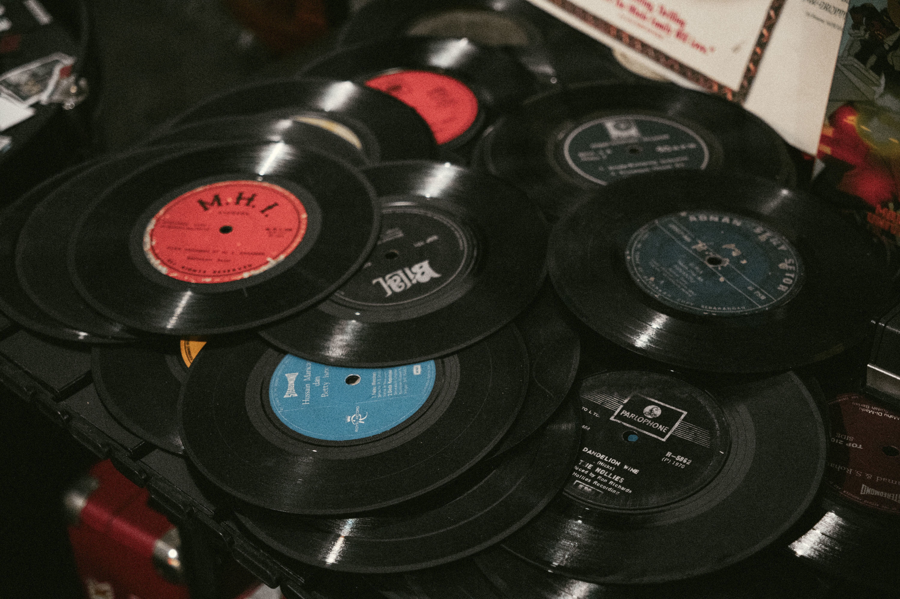
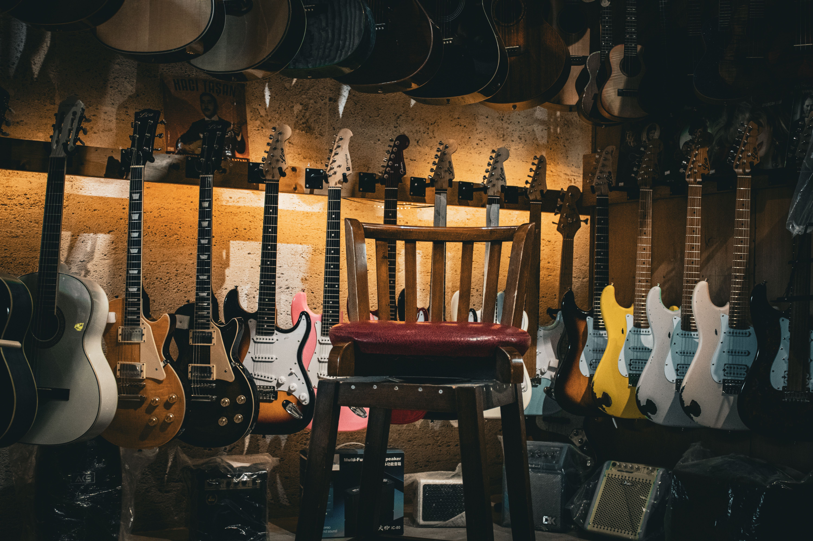

Ramones
Los Ramones · 1976 · Punk Rock
El primer disco de los Ramones, considerado uno de los álbumes más influyentes del punk rock.

Los Ramones · 1976 · Punk Rock
El primer disco de los Ramones, considerado uno de los álbumes más influyentes del punk rock.

Dreamcatcher · 2022 · Punk Rock
Fue su primer álbum de estudio de larga duración en coreano aclamado mundialmente por consolidar de forma brillante su distintiva fusión entre el pop coreano y el punk rock.
Michael Jackson · 1982 · Pop
El disco mas vendido de todos los tiempos, con hits como Billie Jean y Beat It.
Nirvana · 1991 · Grunge
El disco que llevo al grunge a la masividad, con Smells Like Teen Spirit a la cabeza.